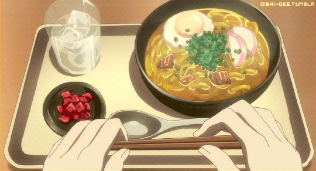

Udon Soup

Description
Udon is a type of noodle made from wheat flour that’s thicker than other noodles such as somen or soba, and is commonly white in color. It’s often used in Japanese cooking in soups, stir fries, or served cold or hot with a side dipping sauce. If served as a soup, the traditional broth (called kakejiru) is made with a mix of dashi, soy sauce, mirin, and sometimes sake, salt, and sugar.
Ingredients
- Dashi: You can make dashi from scratch which is very easy, or you can buy dashi powder. If you are using it in powder form, make sure to get a good one like Kayanoya.
- Water: Udon broth is much milder in taste than a traditional ramen broth, which is why it needs to be diluted with water.
- Soy Sauce: Soy sauce is for umami and to infuse savory and salty flavors. Use 1 1/2 tablespoon but if you are watching your salt intake, you can start by using 1/2 tablespoon and go from there (do a taste test).
- Mirin: Mirin is soy sauce’s best friend! Its sweet and sake-like flavors balance the umami and saltiness of soy sauce to perfection.
- Kombu: You don’t need to use kombu if you are making a vegan broth. Kombu adds a slight mineral taste to the broth that is reminiscent of the ocean.
- Udon noodles: Fresh or frozen sanuki noodles are the best choice for udon soup. The second option is regular fresh or frozen udon noodles. And lastly, dry udon noodles.
- Toppings: I like to add chopped scallions, a raw egg, shiitake mushrooms, tororo kombu, and nori to mine. But go ahead and use any toppings you like. Chopped spinach are great, fish cakes, broccoli, fried tofu, tempura flakes, etc… The options are endless!
- 8 ounces dry udon noodles or 2 packets of fresh udon noodles
Broth
- 1 cup dashi, or use 1 teaspoon dashi powder mixed with 1 cup water
- 1 cup water
- 1 1/2 tablespoon soy sauce
- 3 tablespoons mirin
- 3-inch piece kombu (dried kelp)
Toppings
- 3 stalks scallions (thinly sliced on the bias)
- tororo kombu (optional)
- 2 fresh shiitake mushrooms
- 2 eggs
- 2 dry nori sheets
Steps
- Gather all of your ingredients and set up your work station.
- Put all the ingredients for the broth, stir, and leave for 10 minutes. This is to let the kombu steep and release flavor.
- Turn the heat on and bring the broth to a boil. As soon as it boils, take the kombu out. Lower the heat to medium low, cover, and simmer for 5 minutes.
- Meanwhile fill another pot with water and bring it to boil. Add the udon noodles and follow the instructions on the package. Frozen or fresh udon noodles usually take 2-3 minutes to cook. Drain well.
- Grab two soup or ramen bowls and divide the broth and noodles. Top with your favorite ingredients and serve.